Cuidar
Preciso de ajuda para escolher o que tomar.
Suplemento com a conversa que ninguém mais oferece.
A cada 30 a 40 dias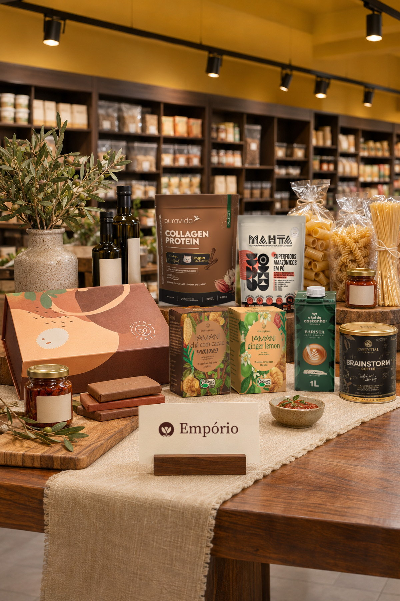
Novembro de 2026 · 75 LAB
Imagem ilustrativa gerada por inteligência artificial.
“Não faz sentido fazer todo um desenho agora, rolar para a rede inteira e janeiro aparecer com o gourmet formatado.”Francine Tolotti, Divina Terra, 29/10/2026
Fonte: reunião de alinhamento de 29/10/2026.
A saúde continua sendo a porta de entrada.
O prazer de comer bem vira mais um motivo para voltar.
A marca não muda. The Healthy Place segue valendo.
Fonte: Posicionamento de Marca, p. 23 e 24. Frase de trabalho, sujeita a aprovação.
Preciso de ajuda para escolher o que tomar.
Suplemento com a conversa que ninguém mais oferece.
A cada 30 a 40 dias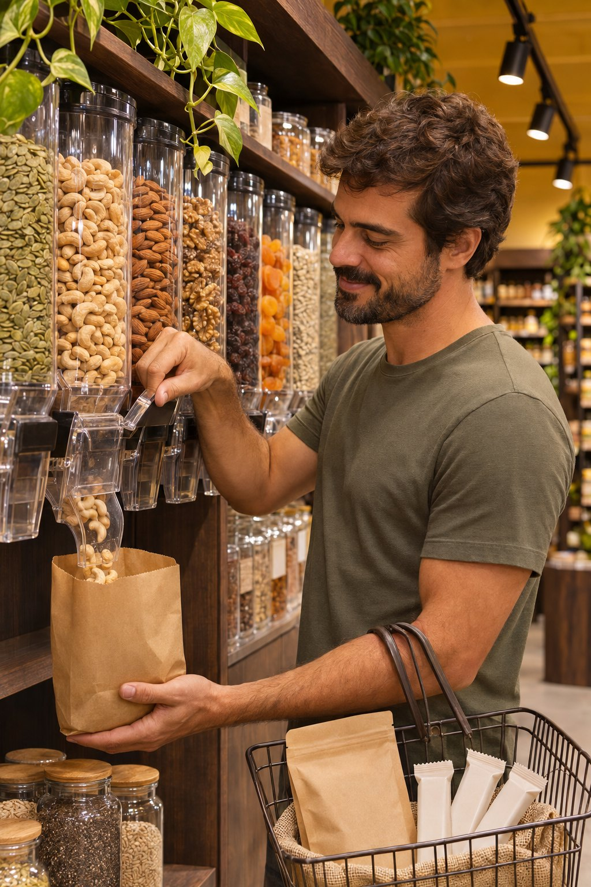
Vou repor o de casa.
Granel, barrinhas, cafés e chás: a compra de rotina.
Toda semanaVou receber, cozinhar, dar um presente.
Azeite, massa, chocolate e vinho, com curadoria.
Em cada ocasiãoFonte: reunião de 29/10/2026, para a frequência. Imagens ilustrativas geradas por inteligência artificial.
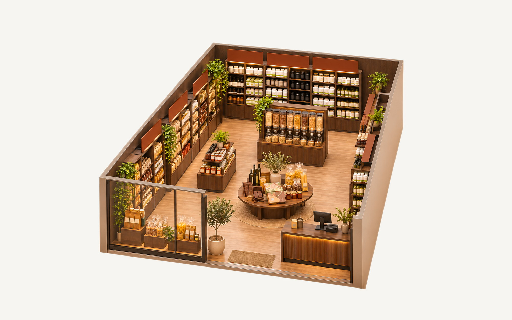
123Imagem ilustrativa de uma loja de 50 a 80 m², gerada por inteligência artificial. Disposição a validar com a planta de cada loja. Clique na imagem para ampliar.
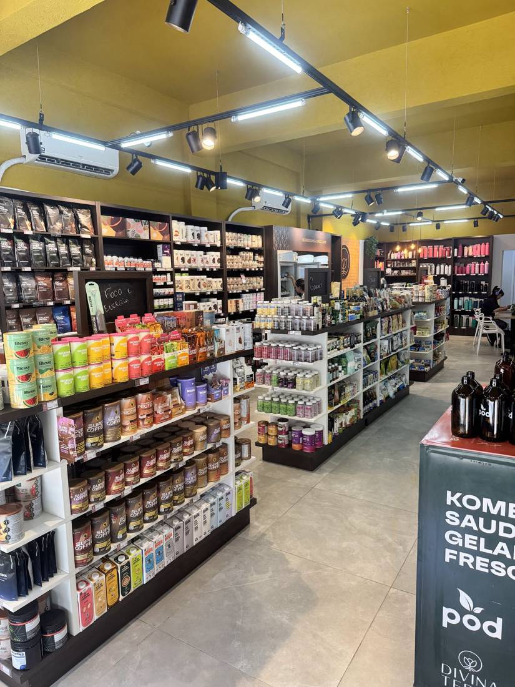
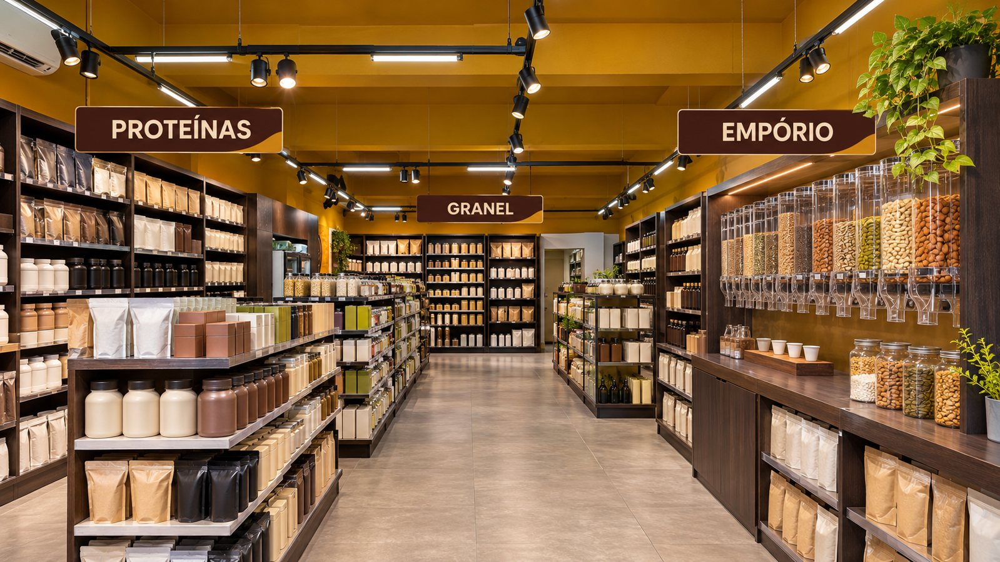
Parede de suplementos organizada por setor, não por marca
Farinhas viram empório: 3 módulos ao lado da mesa
O vão central vira mesa do mês, onde as pessoas já param
Fonte: visita a Pinheiros, 14/10/2026 (foto). Simulação ilustrativa gerada por inteligência artificial, sem marcas reais. Ainda não é o projeto executivo. Clique nas imagens para ampliar.
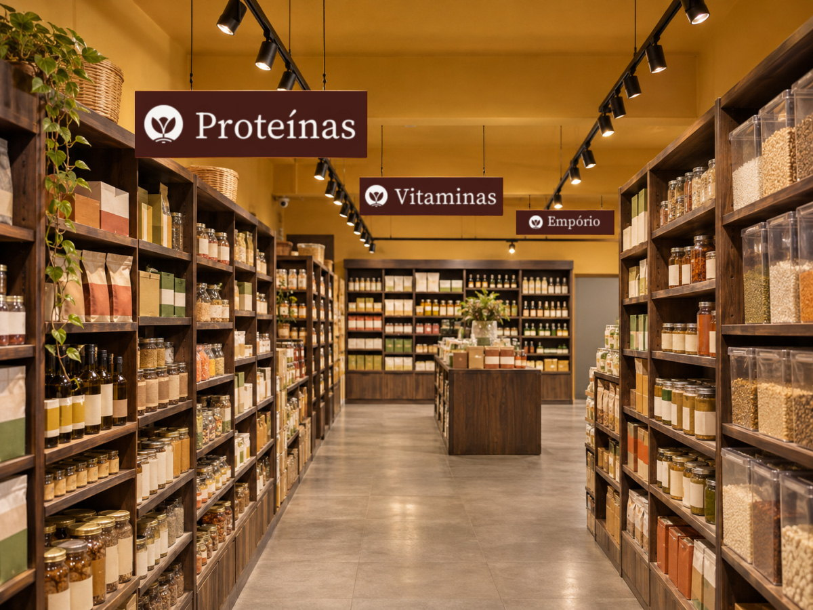
Lê a placa da porta
Entende qual é o dela
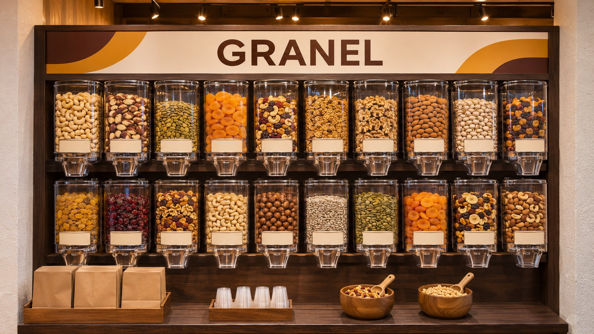
Experimenta uma castanha
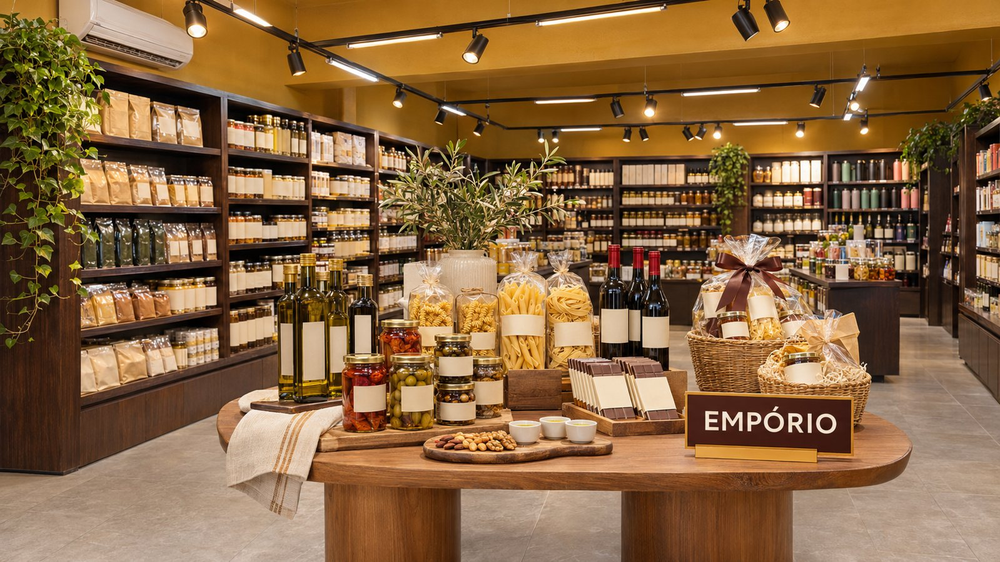
Para na mesa do mês
Repõe na semana seguinte
Cena ilustrativa do resultado pretendido. Imagens geradas por inteligência artificial.
Cada R$ 100 no caixa da rede
Fonte: relatório de vendas, 11/2025 a 09/2026. Das 80 lojas do ranking da rede, 69 têm venda nessa base e 11 ainda não; outras 2 lojas com venda ficam fora do ranking, somando 71 analisadas. Scanntech; StoneX; IFEPEC/Febrafar, declaração de compra.
Ganhar na conversa, que mercado e farmácia pouco oferecem.
Levar o granel do Sudeste, em 10%, para perto do Sul, em 26%.
Abrir um motor que hoje é 1,9% da venda.
Fonte: Apresentação Institucional, p. 9 (mais de 100 mil); relatório de vendas, 11/2025 a 09/2026, 71 lojas; reunião de 29/10/2026.
da venda de Vila Madalena já é empório. Em 64 m², com Warabu e Amarelo Café.
Empório como parte da venda da loja
Fonte: relatório de vendas, 11/2025 a 09/2026, classificação de empório da 75 LAB. A venda total de Vila Madalena é menor que a média: o percentual é sinal de caminho, não meta de receita.
Fonte: relatório de vendas, 11/2025 a 09/2026, lojas com venda na base. Prioridades: proposta da 75 LAB.
12 fichas prontas. Sem software e sem projeto sob medida.
Fonte: proposta da 75 LAB, adaptada de Sebrae e ECR Brasil, 2014. Percentuais de 60, 20 e 20 a calibrar com a rede. O método completo, por categoria, está no book.
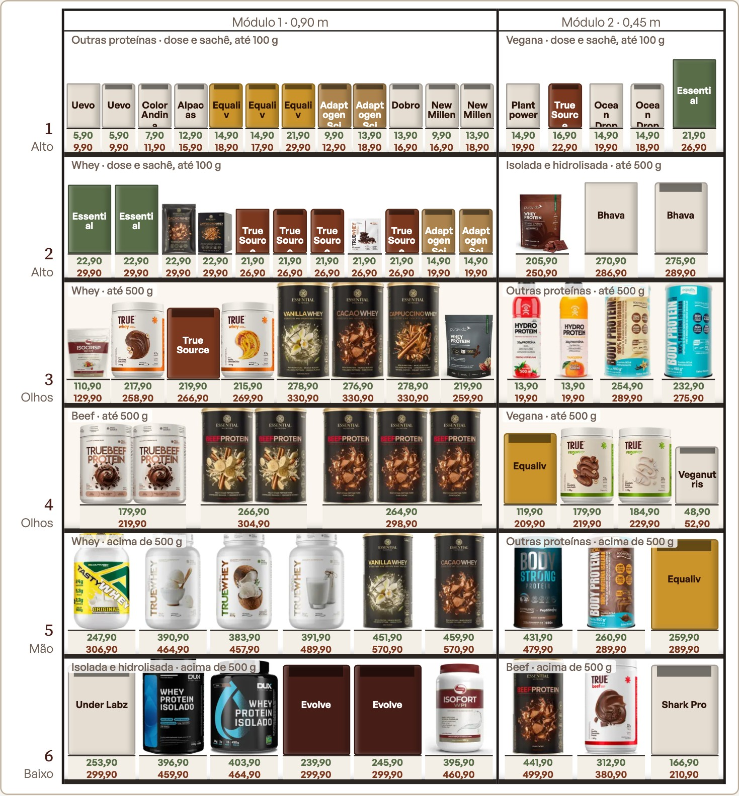
Fonte: relatório de vendas, 11/2025 a 09/2026, e fotos dos produtos. Larguras estimadas até a medição com trena. Todos os planogramas estão no book. Clique na imagem para ampliar.
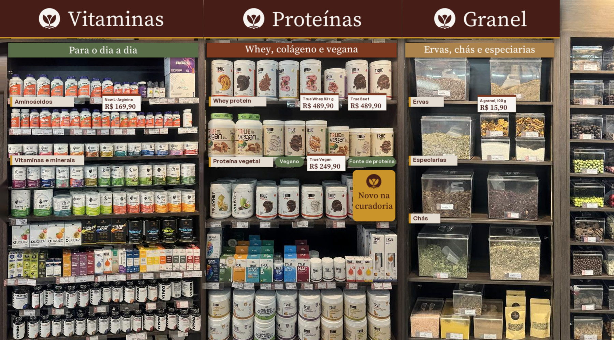
Fotomontagem sobre gôndola real de Pinheiros, com peças simuladas e preços ilustrativos. Produção física das peças fora do escopo atual. Clique na imagem para ampliar.
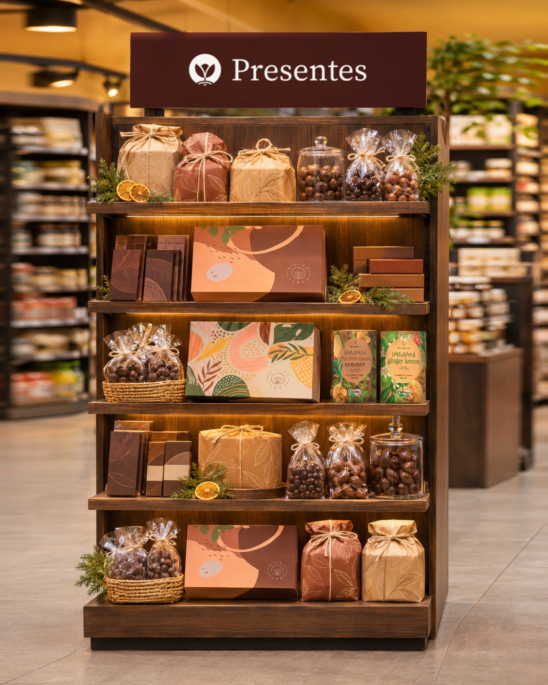
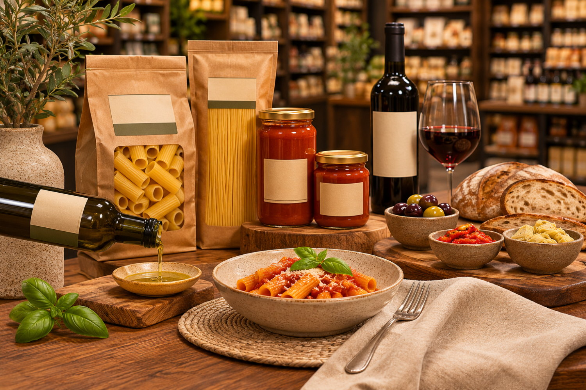
Imagens ilustrativas geradas por inteligência artificial. O teste de Natal é aprendizado e não entra na conta do piloto. Clique nas imagens para ampliar.
O que a base mostra hoje
O que ainda precisa ser provado
Onde queremos chegar em 2028
Fonte: relatório de vendas, 11/2025 a 09/2026, anualizado; cálculo da 75 LAB, em que a venda que não é nova sai de suplemento e despensa. Não considera as 11 lojas sem venda na base, efeito de preço nem margem. Simulação, sem garantia de resultado.
Fonte: proposta da 75 LAB; relatório de vendas, 11 meses (venda mensal de Pinheiros e Moinhos com correlação de 0,82). Uma loja mostra direção, não certeza estatística: a onda seguinte repete a medida em outras lojas. Vinho e queijo entram só com validação.
Fonte: proposta da 75 LAB; reunião de 29/10/2026. Depende de aprovações em até 3 dias úteis por etapa e dos dados pedidos até 20/11. Cada onda só anda se a anterior passar.
Mais de 100 mil clientes por mês, e um empório que já faz 6,8% em uma loja de 64 m²
Simulação, sem garantia de resultado. Para seguir, a rede precisa enviar até 20/11: venda das 11 lojas que faltam, cupons e custo por produto.
Caique Becker · caique.becker@75lab.com.br · (11) 8864-8434 · 75lab.com.br